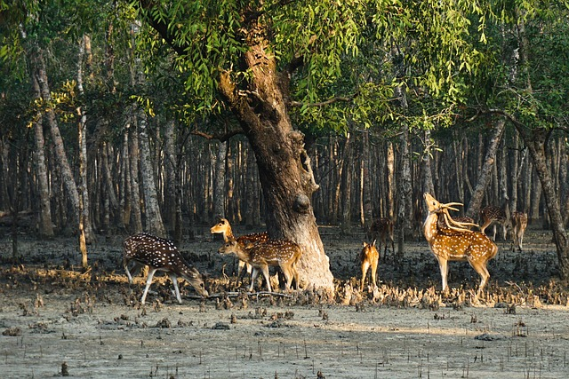

Sundarbans (pronounced /sʌnˈdɑːrbənz/) is a mangrove area in the delta formed by the confluence of the Ganges, Brahmaputra and Meghna Rivers in the Bay of Bengal. Sundarban Reserve Forest (SRF) of Bangladesh is the largest mangrove forest in the world. It spans the area from the Baleswar River in Bangladesh's division of Khulna to the Hooghly River in India's state of West Bengal. It comprises closed and open mangrove forests, land used for agricultural purpose, mudflats and barren land, and is intersected by multiple tidal streams and channels. Sundarbans is home to the world's largest area of mangrove forests.[3] Four protected areas in the Sundarbans are enlisted as UNESCO World Heritage Sites, viz. Sundarbans West (Bangladesh), Sundarbans South (Bangladesh), Sundarbans East (Bangladesh) and Sundarbans National Park (India).[4]
